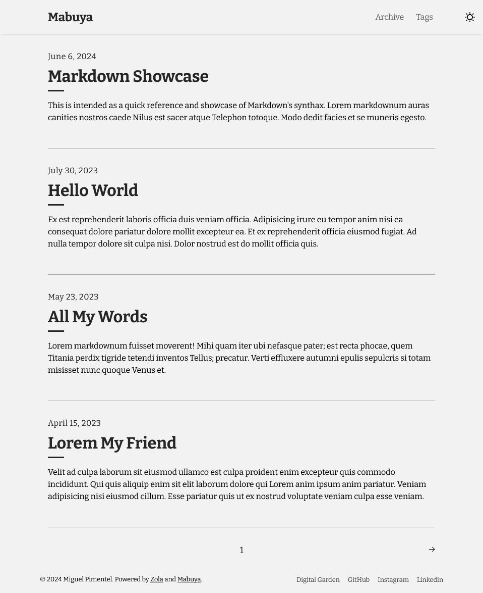

Mabuya is a lightweight Zola theme for creating fast, SEO-optimized blogs.
Put your work front and center with Mabuya as the base of your project.

While searching for themes, I stumbled upon Tale. Unfortunately, the last update was on December, 2021. Soon after, I decided to fork the project and add my own touches to it.
The name Mabuya comes from the Mabuya hispaniolae, a possibly extinct1 species of skink endemic to the Dominican Republic, my home country.
While working on the theme, I have added new functionality and made many quality of life improvements. Here's a short list:
 |
|---|
Before using the theme, you need to install Zola ≥ v0.18.0. After which you'll need to:
git clone git@github.com:semanticdata/mabuya.gitcd mabuyazola serveFor more detailed instructions, visit the documentation page about installing and using themes.
You can change the configuration, templates and content yourself. Refer to the config.toml, and templates for ideas. In most cases you only need to modify the contents of config.toml to customize the appearance of your blog. Make sure to visit the Zola Documentation.
Adding custom CSS is as easy as adding your styles to sass/_custom.scss. This is made possible because SCSS files are backwards compatible with CSS. This means you can type normal CSS code into a SCSS file and it will be valid.
steps:
- name: Checkout
uses: actions/checkout@v4
- name: Install Zola
uses: taiki-e/install-action@zola
- name: Build Zola
run: zola check --drafts --skip-external-links
env:
BUILD_ONLY: true
GITHUB_TOKEN: ${{/* secrets.GITHUB_TOKEN */}}steps:
- name: Checkout
uses: actions/checkout@v4
- name: Install Zola
uses: taiki-e/install-action@zola
- name: Build site
run: zola build
env:
GITHUB_TOKEN: ${{/* secrets.GITHUB_TOKEN */}}
- name: Upload site artifact
uses: actions/upload-pages-artifact@v3
with:
path: public
- name: Deploy to GitHub Pages
id: deployment
uses: actions/deploy-pages@v4We use GitHub Issues as the official bug tracker for Mabuya. Please search existing issues. It’s possible someone has already reported the same problem. If your problem or idea is not addressed yet, open a new issue.
We'd love your help! Please see CONTRIBUTING and our Code of Conduct before submitting a Pull Request.
Mabuya is a fork of Tale, which itself is a port of the Jekyll theme Tale which is now archived.
The icons used throughout the site are kindly provided by UXWing. Read their license.
Source code in this repository is available under the MIT License.
Mabuya hispaniolae's conservation status is Critically endangered, possibly extinct.